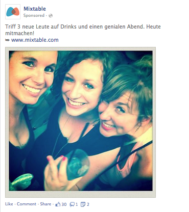

Off-the-Record Learnings after using Facebook Adverts
Here we want to share lessons learned using Facebook Adverts for a period of time more than 6 months. This can help advanced online marketers to compare their campaigns and avoid making mistakes.
Searching for “Facebook Adverts” or “Facebook Marketing” you will find millions of article ratings from very good ones to rather crappy ones. We don’t want to share another intro to Facebook Marketing, but rather highlight some specific insights we gained which could help you get some good ideas for your own campaigns. Beginners can start with the following:
Getting started after you’ve gotten started
If you found that Facebook works for your business model as well as customer group and you are committed to spend >1.000€, optimize your online presence by using the “Facebook Start to Success” (STS) program. Apply here. The program requires a minimum budget of 30€ per day and will give you the chance to schedule weekly/regular calls with Facebook Reps who will help you set up new campaigns and answer all your questions over a four week period.
Once you have completed the STS program, you may choose to no longer spend money on your account, in which case your account won’t be supported by your STS contact anymore. Your STS contact will also be able to recommend you to a personal Facebook Account Manager and professionalize your marketing activities going forward. You will have to spend a minimum of around 8,000€ per month on Adverts. This also enables you to get a “Verified Facebook Page” which allows you to have different regional pages under the same page name. But the recommendation to a key account is only possible right after the 4 weeks period. Of course you will be able to apply for a Facebook Account Manager later on but it might not be as easy. Get in contact with the Facebook Adverts sales team here.
Understand that on Facebook the right of way belongs to the people who have a bigger marketing budget. For example, don’t get confused if your daily budget isn’t totally spent. Frankly speaking, Facebook favors some bigger players and might simply shut you off.
Mixtable’s insights
Check “how-to” Introductions to learn more about how to create a perfect Advert Campaign (in theory). Here’s a real advert we posted…

Creative
For us, Photo Ads worked slightly better than Link Ads, which we created in Power Editor (Please only use Power Editor!). Try Advert offers if it suits your business, we found we captured a really high organic reach the few times we used it.
URL Tag: Of course Facebook will allow you to analyze reports of all your campaigns, however, if you use Google Analytics (And you should use it from day one!!!) then here is where you can add the tracking link for each advert – Use Google’s URL builder to create the link it.
Useful hint: Take care to not use the first “?” in the optional URL Tags box as the link created by the Google URL builder initially contains one, compare: “…com/?utm_source=…”
In the creative section you set the tracking pixel too – more about conversion pixels later. For user acquisition we predominately used News Feed. We saw competitors using (sometimes spamming) the Facebook “Right Column” too, and perhaps this works well for re-activating or retargeting users Try it out and let us know.
Audience
We briefly mentioned the tracking pixel above. It is imperative to integrate the pixels properly on your webpage from the very beginning!!! It will only be a couple of minutes of work for your IT folks, but make sure you have set it up correctly.
For Mixtable the most powerful thing in terms of user acquisition through Facebook was targeting customer audiences. This means that Facebook will show your Adverts to new users with a similar profile to your existing target audiences. Remember to exclude your existing users if you aim for new customer acquisition. We achieved CTRs of 3-4% and low costs per conversion on News Feed Adverts.
In addition you should try out targeting users with relevant interests. This can be done very creatively or as straight forward as targeting users connected to your competitors. For us this meant targeting users who have other online dating apps set as their interests. Always check the size of the potential audience. We had good experiences with sizes of 20,000 to 100,000 target users.
Optimization & Pricing
Trusting the Facebook algorithm actually worked for us. Our campaigns predominately ran on Optimized CPM [PH1] making Facebook’s algorithm spot users who are most likely to sign up for Mixtable. In order to make this work properly, check for the correct setup of your tracking pixels.
We had high CTR (1-2%) for a CPC campaign and after changing the same campaign to CPM the CTR dropped by a factor of 10. Try out everything but don’t be surprised if you end up using oCPM. And remember, using CPC makes Facebook show your Adverts to the “Clickers” – no matter if they get your customers or not
Result
Compare your campaign data to ours: We achieved CPC of 0,10€ to 0,20€ and signup costs of 1€ - 4€ on average.
Other useful tips
Facebook isn’t enough! Our experience is that in order to really build up a brand and target a broad audience Facebook isn’t enough. Working with Facebook Marketing you will soon stay logged-in 24/7 and start thinking everybody does that. You’ll be surprised how many people don’t like using Facebook too frequently and are not reachable here – not mentioning the big discussions about Facebook getting uncool [link] But definitely it’s a good tool to quickly get traction on your webpage and is still cheaper compared to Google Adwords.
Get ready for spending a lot of time on preparing, checking and optimizing your Facebook campaign. If you find that Facebook can be a strong user acquisition channel for your online business, then don’t be afraid of dedicating a full-time workforce on that topic. Best case including the following skills: texting, Photoshop and analytical strength.
Facebook changes every now and then, so note that this was written in July 2014 and get in touch for any further questions.
Tobias Henning